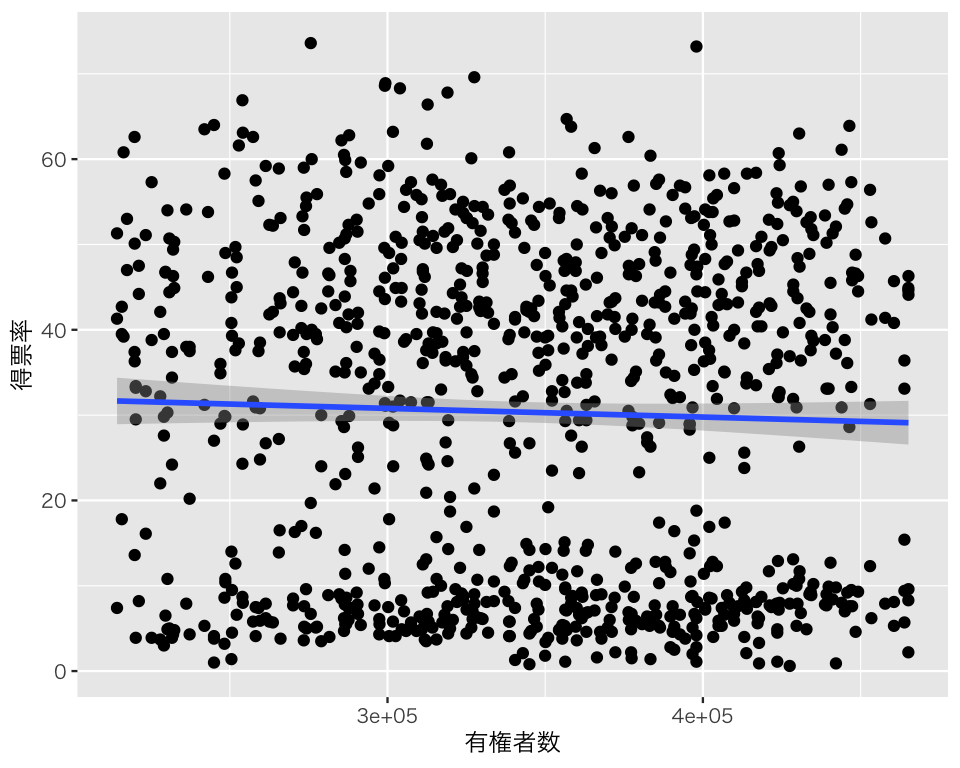

pacman::p_load(tidyverse,
interplot,
broom)
if (.Platform$OS.type == "windows") {
if (require(fontregisterer)) {
my_font <- "Yu Gothic"
} else {
my_font <- "Japan1"
}
} else if (capabilities("aqua")) {
my_font <- "HiraginoSans-W3"
} else {
my_font <- "IPAexGothic"
}
theme_set(theme_gray(base_size = 9,
base_family = my_font))10 交差項の利用
今回の目標
- 回帰分析における交差項の意味を理解する
- 交差項を含む回帰モデルの推定結果の意味を正しく解釈できるようになる
10.1 準備
今回使うパッケージを読み込む。
10.2 交差項の利用 (1) 調整変数がダミー変数の場合
説明のために、浅野正彦・矢内勇生 (2018)『Rによる計量政治学』のデータ hr-data.csv を使う。
HR <- read_csv("data/hr-data.csv")
#glimpse(HR)衆議院議員経験があることを表すダミー変数と選挙費用を100万円単位で測定する変数を作る。
HR <- HR |>
mutate(experience = as.numeric(status == "現職" | status == "元職"))2009年の結果だけ抜き出し、HR09として保存する（expm が欠測しているものを除外する）。 また、voteshare, expm, experienceの3変数だけ残す。select() という名前の関数は、dplyrパッケージ (tidyverseで読み込んだ) と interplot パッケージの両者に含まれるので、dplyr::select() と書いて、dplyrのselect() を使う。
10.2.1 記述統計
2009年の衆院選データについて、上で選んだ3変数の基本的な統計量を確認する。
summary(HR09) voteshare expm experience
Min. : 0.10 Min. : 0.01002 Min. :0.0000
1st Qu.: 2.50 1st Qu.: 1.79454 1st Qu.:0.0000
Median :30.40 Median : 4.80944 Median :0.0000
Mean :26.53 Mean : 6.11818 Mean :0.4048
3rd Qu.:47.33 3rd Qu.: 9.10911 3rd Qu.:1.0000
Max. :95.30 Max. :25.35407 Max. :1.0000 標準偏差も確認する。apply() を使うと、複数の変数の標準偏差を一挙に求めることができる。
apply(HR09, MARGIN = 2, FUN = sd) voteshare expm experience
22.1976087 4.9972111 0.4910726 このように、apply() の最初の引数は対象となるデータ（行列）である。MARGIN は、計算を行に対して実行する (MARGIN = 1) か、列に対して実行する (MARGIN = 2) かを指定する。ここでは、各列が各変数に対応しているので、列を指定する。次に、FUN (function) として、sd() を指定する。ここで関数を指定する際は、() を省略して書く。 FUN で指定した関数が、第1引数で指定した各列（MARGIN = 1 なら各行）に適用される。FUN の関数に追加で引数を指定したいときは、続けて書く。たとえば、sd(x, na.rm = TRUE) を apply() で使いたいときは、 apply(HR09, MARGIN = 2, FUN = sd, na.rm = TRUE) とすれば良い。
10.2.2 交差項を使った回帰分析
得票率 \(V\) を応答変数、選挙費用 \(M\) を主な説明変数、議員経験の有無 \(X\) を調整変数とする回帰分析を考えよう。この回帰モデルは、 \[ V_i \sim \mbox{Normal}\left(\gamma_0 + \gamma_1 M_i + \gamma_2 X_i + \gamma_3 M_i X_i, \sigma \right) \] と書ける。まず、回帰分析で \(\gamma_k\) (\(k = 0, 1, 2, 3\)) の値を推定しよう。
fit_1 <- lm(voteshare ~ expm * experience, data = HR09)
tidy(fit_1, conf.int = TRUE)# A tibble: 4 × 7
term estimate std.error statistic p.value conf.low conf.high
<chr> <dbl> <dbl> <dbl> <dbl> <dbl> <dbl>
1 (Intercept) -2.10 0.713 -2.94 3.36e- 3 -3.50 -0.697
2 expm 4.87 0.164 29.6 5.97e-143 4.55 5.19
3 experience 46.2 1.57 29.5 9.13e-142 43.1 49.3
4 expm:experience -4.77 0.206 -23.2 2.19e- 97 -5.18 -4.37 このように、lm(Y ~ M * X, data = d) と書くと、\(M\) (expm), \(X\) (experience), \(M \times X\) (expm:experience) の3つの説明変数をもつ重回帰が実行される。
推定された偏回帰係数の意味を意味を考えよう。まず、\(\gamma_0\) の推定値は -2.1 である。これは、すべての説明変数の値が0のときの得票率の予測値である。つまり、選挙費用が0（そんな候補者はいない！）で、議員経験がない候補者の得票率の予測値が、 -2.1 である（が、そんな得票率はあり得ない）。
次に、\(\gamma_1\) の推定値は 4.87 である。これは、議員経験がない (experience = 0の) 候補者について、選挙費用1単位の増加が、平均すれば得票率を4.87ポイント増加させることを示している。
続いて、\(\gamma_2\) の推定値は 46.19 である。これは、選挙費用 (expm) が0の候補者について、議員経験があることが得票率をどれだけ増やすかを示している。つまり、選挙費用が0のとき、議員経験は平均すれば得票率を46.19ポイント上昇させる。
最後に、\(\gamma_3\) の推定値は -4.77 である。これは、議員経験が、選挙費用が得票率に与える影響の大きさ（つまり、得票率を選挙費用に回帰した直線の傾き）をどれだけ変えるかを示している。
偏回帰係数に実質的に意味がない値が示されているので、選挙費用を中心化して推定し直そう。
HR09 <- HR09 |>
mutate(expm_c = expm - mean(expm))
fit_2 <- lm(voteshare ~ expm_c * experience, data = HR09)
tidy(fit_2, conf.int = TRUE)# A tibble: 4 × 7
term estimate std.error statistic p.value conf.low conf.high
<chr> <dbl> <dbl> <dbl> <dbl> <dbl> <dbl>
1 (Intercept) 27.7 0.658 42.1 9.52e-233 26.4 29.0
2 expm_c 4.87 0.164 29.6 5.97e-143 4.55 5.19
3 experience 17.0 1.01 16.8 8.69e- 57 15.0 19.0
4 expm_c:experience -4.77 0.206 -23.2 2.19e- 97 -5.18 -4.37推定された偏回帰係数の意味を意味を考えよう。まず、\(\gamma_0\) の推定値は 27.7 である。これは、すべての説明変数の値が0のときの得票率の予測値である。つまり、選挙費用が平均値で、議員経験がない（議員経験は中心化していないことに注意）候補者の得票率の予測値が、 27.7 である。
次に、\(\gamma_1\) の推定値は 4.87 である。これは、議員経験がない (experience = 0の) 候補者について、選挙費用1単位の増加が、平均すれば得票率を4.87ポイント増加させることを示している。先程とまったく同じ推定値が得られた。これは、調整変数である議員経験を中心化していないからである。
続いて、\(\gamma_2\) の推定値は 16.99 である。これは、選挙費用 (expm) が平均値の候補者について、議員経験があることが得票率をどれだけ増やすかを示している。つまり、、選挙費用が平均値のとき、議員経験は平均すれば得票率を16.99ポイント上昇させる。この値は、fit_1 で得られた値とは異なる。これは、説明変数である選挙費用を中心化したためである。fit_1では、「選挙費用が0のとき」という非現実的（かつ観測されていない）値についての推定値が示されていた。それに対し、fit_2 では、「中心化された選挙費用が0、すなわち選挙費用が平均値のとき」という、実際に意味がある場合の推定値が表示されている。
最後に、\(\gamma_3\) の推定値は -4.77 である。これは、議員経験が、選挙費用が得票率に与える影響の大きさ（つまり、得票率を選挙費用に回帰した直線の傾き）をどれだけ変えるかを示している。この値は、fit_1 と同じである。このように説明変数（と調整変数）を中心化しても、交差項の偏回帰係数の推定値は変化しない（交差項の意味を考えれば当たり前である）。
このように、調整変数がダミー変数の場合には、偏回帰係数の意味を説明することもできる。しかし、やはりわかりにくいので、結果を図にしよう。調整変数がダミー変数の場合には、調整変数が0の場合と1の場合のそれぞれについて、回帰直線を求めて図示すればよい。これは、geom_smooth() を使えば簡単にできる。experience() の値は連続ではないので、as.factor() を使う。
int1 <- ggplot(HR09, aes(x = expm,
y = voteshare,
color = as.factor(experience))) +
geom_smooth(method = "lm") +
geom_point() +
scale_color_brewer(palette = "Set1",
name = "議員経験",
labels = c("なし", "あり")) +
labs(x = "選挙費用（100万円）",
y = "得票率 (%)")
plot(int1)`geom_smooth()` using formula = 'y ~ x'この図を見れば、選挙費用が得票率に与える影響は、議員経験の有無によってまったく異なることが一目瞭然である。議員経験がない場合には、選挙費用が得票率と強く相関するが、議員経験がある場合にはあまり関連がないことが見てとれる。 （ただし、推定した回帰モデルが「良い」モデルかどうかは別問題である。）
10.3 交差項を構成する項
上の例では、\(V\) を \(M\), \(X\), \(M \times X\) という3つの説明変数に回帰した。これらのうちの一部を省略すると、どのような問題が生じるのだろうか。
10.3.1 主な説明変数 \(M\) を省く
まず、\(M\) を省いてみよう。つまり、\(\gamma_1 = 0\) という仮定をモデルに追加する。
fit_3 <- lm(voteshare ~ experience + expm_c:experience,
data = HR09)
tidy(fit_3, conf.int = TRUE)# A tibble: 3 × 7
term estimate std.error statistic p.value conf.low conf.high
<chr> <dbl> <dbl> <dbl> <dbl> <dbl> <dbl>
1 (Intercept) 13.9 0.622 22.4 6.67e- 92 12.7 15.1
2 experience 30.8 1.20 25.7 4.70e-115 28.4 33.1
3 experience:expm_c 0.0962 0.166 0.580 5.62e- 1 -0.229 0.421（偏回帰係数の意味は各自で考えてもらうこととして）この結果を図にしてみよう。調整変数がダミー変数なので、場合分けして考える。選挙費用については、観測された最小値から最大値までを考える。
experience = 0のときの予測値は、
である。
experinece = 1 のときの予測値は、
である。
図を作るために、これらの値を tibble にする。
df_fitted <- tibble(money, money_c, fitted3_x0, fitted3_x1)図を描く。（信頼区間を加えるには、もうひと手間必要。今回は割愛する。）
plt3 <- ggplot(df_fitted) +
geom_line(aes(x = money, y = fitted3_x0), color = "red") +
geom_line(aes(x = money, y = fitted3_x1), color = "blue") +
geom_point(data = HR09, aes(x = expm,
y = voteshare,
color = as.factor(experience))) +
scale_color_brewer(palette = "Set1",
name = "議員経験",
labels = c("なし", "あり")) +
labs(x = "選挙費用（100万円）", y = "得票率 (%)")
plot(plt3)\(\gamma_1 = 0\) という制約のせいで、議員経験がない場合の傾きが0になってしまっている。そのせいで、議員経験がないときの選挙費用と得票率の関係がうまく捉えられていない。選挙費用が得票率に与える影響を知りたいのであれば、「選挙費用」を説明変数から除外してはいけないということだ（当たり前だ）。
10.3.2 調整変数 \(X\) を省く
次に、\(X\) を省いてみよう。つまり、\(\gamma_2 = 0\) という仮定をモデルに追加する。
fit_4 <- lm(voteshare ~ expm_c + expm_c:experience,
data = HR09)
tidy(fit_4, conf.int = TRUE)# A tibble: 3 × 7
term estimate std.error statistic p.value conf.low conf.high
<chr> <dbl> <dbl> <dbl> <dbl> <dbl> <dbl>
1 (Intercept) 34.9 0.558 62.5 0 33.8 36.0
2 expm_c 6.14 0.163 37.7 3.25e-201 5.82 6.46
3 expm_c:experience -4.98 0.230 -21.6 4.41e- 87 -5.43 -4.53（偏回帰係数の意味は各自で考えてもらうこととして）この結果を図にしてみよう。調整変数がダミー変数なので、場合分けして考える。選挙費用については、先程と同様に考える。
experience = 0のときの予測値は、
である。
experinece = 1 のときの予測値は、
である。
図を作るために、これらの値を df_fitted に追加する。
df_fitted$fitted4_x0 <- fitted4_x0
df_fitted$fitted4_x1 <- fitted4_x1図を描く。（信頼区間を加えるには、もうひと手間必要。今回は割愛する。）
plt4 <- ggplot(df_fitted) +
geom_line(aes(x = money, y = fitted4_x0), color = "red") +
geom_line(aes(x = money, y = fitted4_x1), color = "blue") +
geom_point(data = HR09, aes(x = expm,
y = voteshare,
color = as.factor(experience))) +
scale_color_brewer(palette = "Set1",
name = "議員経験",
labels = c("なし", "あり")) +
labs(x = "選挙費用（100万円）",
y = "得票率 (%)")
plot(plt4)\(\gamma_2 = 0\) という制約のせいで、議員経験がある場合とない場合の回帰直線の切片（選挙費用を中心化したので、選挙費用が平均値のときの \(\hat{V}\) の値）が同じになることが強制されている。そのせいで、議員経験がないときの選挙費用と得票率の関係がうまく捉えられていない。このように、調整変数そのものを説明変数に加えないと、回帰直線が特定の点を通過するよう無理やり調整されるので、推定がうまくいかない。
10.3.3 交差項 \(M \times X\) を省く
最後に、\(M \times X\) を省いてみよう。つまり、\(\gamma_3 = 0\) という仮定をモデルに追加する。 これは、交差項を使わないモデルであり、このトピックを学習するまで考えてきた交差項なしの回帰モデルと式の上では同じである。
fit_5 <- lm(voteshare ~ expm_c + experience,
data = HR09)
tidy(fit_5, conf.int = TRUE)# A tibble: 3 × 7
term estimate std.error statistic p.value conf.low conf.high
<chr> <dbl> <dbl> <dbl> <dbl> <dbl> <dbl>
1 (Intercept) 19.1 0.661 28.9 1.51e-137 17.8 20.4
2 expm_c 1.83 0.120 15.2 1.40e- 47 1.59 2.07
3 experience 18.4 1.23 15.0 1.99e- 46 16.0 20.8 （偏回帰係数の意味は各自で考えてもらうこととして）この結果を図にしてみよう。調整変数がダミー変数なので、場合分けして考える。選挙費用については、先程と同様に考える。
experience = 0のときの予測値は、
である。
experinece = 1 のときの予測値は、
である。
図を作るために、これらの値を df_fitted に追加する。
df_fitted$fitted5_x0 <- fitted5_x0
df_fitted$fitted5_x1 <- fitted5_x1図を描く。（信頼区間を加えるには、もうひと手間必要。今回は割愛する。）
plt5 <- ggplot(df_fitted) +
geom_line(aes(x = money, y = fitted5_x0), color = "red") +
geom_line(aes(x = money, y = fitted5_x1), color = "blue") +
geom_point(data = HR09, aes(x = expm,
y = voteshare,
color = as.factor(experience))) +
scale_color_brewer(palette = "Set1",
name = "議員経験",
labels = c("なし", "あり")) +
labs(x = "選挙費用（100万円）",
y = "得票率 (%)")
plot(plt5)\(\gamma_3 = 0\) という制約のせいで、議員経験がある場合とない場合の回帰直線の傾きが同じになることが強制されている。そのせいで、交差項を含むモデルと比べると、議員経験がある場合とない場合のそれぞれについて、選挙費用と得票率の関係がうまく捉えられていない。このように、「交差項を使わない」という決断自体が、モデルに制約を加えているということを自覚する必要がある。
10.4 交差項の利用 (2) 調整変数が量的変数の場合
引き続き、浅野・矢内 (2018) の衆院選データを使う。 2005年の衆院選について、voteshare, exppv, eligibleの3変数だけ残す。select() という名前の関数は、dplyrパッケージ (tidyverseで読み込んだ) と interplot パッケージの両者に含まれるので、dplyr::select() と書いて、dplyrのselect() を使う。
10.4.1 記述統計
2005年の衆院選データについて、上で選んだ3変数の基本的な統計量を確認する。
summary(HR05) voteshare exppv eligible
Min. : 0.60 Min. : 0.148 Min. :214235
1st Qu.: 8.80 1st Qu.: 8.352 1st Qu.:297385
Median :34.80 Median :22.837 Median :347866
Mean :30.33 Mean :24.627 Mean :344654
3rd Qu.:46.60 3rd Qu.:35.269 3rd Qu.:397210
Max. :73.60 Max. :89.332 Max. :465181
NA's :4 exppv （有権者1人あたりに費やした選挙費用）に欠測値 NA が4つあることがわかる。
3変数の標準偏差を求める。
apply(HR05, MARGIN = 2, FUN = sd, na.rm = TRUE) voteshare exppv eligible
19.23023 17.90740 63898.23016 得票率 voteshare と 一人当たり選挙費用 exppv の関係を、散布図で確認する。
plt_vs_ex <- ggplot(HR05, aes(x = exppv, y = voteshare)) +
geom_point() +
geom_smooth(method = "lm") +
labs(x = "有権者一人当たり選挙費用", y = "得票率")
plot(plt_vs_ex)`geom_smooth()` using formula = 'y ~ x'Warning: Removed 4 rows containing non-finite values (`stat_smooth()`).Warning: Removed 4 rows containing missing values (`geom_point()`).有権者数 elgible と exppv の関係を、散布図を使って確認する。
plt_vs_el <- ggplot(HR05, aes(x = eligible, y = voteshare)) +
geom_point() +
geom_smooth(method = "lm") +
labs(x = "有権者数", y = "得票率")
plot(plt_vs_el)`geom_smooth()` using formula = 'y ~ x'
10.4.2 交差項を使った回帰分析
有権者一人あたり選挙費用 exppv が得票率 voteshare に与える影響は、有権者数 eligible によって変わるだろうか。これを確かめるために、exppv と eligible の交差項 (interaction term) を回帰分析に投入し、以下のモデルを推定する。
\[ 得票率_i = \beta_0 + \beta_1 選挙費用_i + \beta_2 有権者数_i + \beta_3 選挙費用_i \times 有権者数_i + 誤差_i \]
このモデルをlm()で推定するためには、次のコードを使う。
model_1 <- lm(voteshare ~ exppv * eligible,
data = HR05)つまり、変数1 * 変数2 という書き方をすると、重回帰分析に 「変数1」、「変数2」、「変数1と変数2の交差項」という3つの項が加えられる。
結果を確認してみよう。
tidy(model_1)# A tibble: 4 × 5
term estimate std.error statistic p.value
<chr> <dbl> <dbl> <dbl> <dbl>
1 (Intercept) 9.64 3.79 2.54 1.12e- 2
2 exppv 0.0192 0.114 0.168 8.67e- 1
3 eligible -0.00000148 0.0000107 -0.138 8.90e- 1
4 exppv:eligible 0.00000255 0.000000350 7.29 6.44e-13この結果は、どのように解釈できるだろうか。例えば、exppv の係数の推定値 0.019 はどういう意味を持っているだろうか。通常の回帰分析と同様に考えると、他の変数の値を一定に保ったとき、 exppvが1単位増えると、得票率が0.019 ポイント上がるという意味である。
しかし、他の変数を一定に保つことは可能だろうか？このモデルでは、特殊な状況を除きそれは不可能である。exppv の値を変えれば、exppv \(\times\) eligibleの値も変わってしまうからである。他の変数を一定に保つことができるのは、eligble = 0 のときだけある。しかし、有権者数がゼロの選挙区は存在しないので、0.019という数字をそのまま解釈することはできない。言い換えると、\(\beta_1\) の推定値が得られただけではあまり嬉しくない。
この例からわかる通り、交差項を含む回帰分析の結果を、表から読み取ることは一般的に非常に難しい。これは、表を提示するだけでは分析結果の報告として不十分だということを意味する。
先ほどのモデルでは説明変数をそのまま使っていた。次に、説明変数を中心化して、同様のモデルを推定してみよう。
HR05 <- HR05 |>
mutate(exppv_c = exppv - mean(exppv, na.rm = TRUE),
eligible_c = eligible - mean(eligible))
model_2 <- lm(voteshare ~ exppv_c * eligible_c, data = HR05)
tidy(model_2)# A tibble: 4 × 5
term estimate std.error statistic p.value
<chr> <dbl> <dbl> <dbl> <dbl>
1 (Intercept) 31.2 0.419 74.6 0
2 exppv_c 0.898 0.0251 35.7 1.46e-179
3 eligible_c 0.0000613 0.00000658 9.32 7.45e- 20
4 exppv_c:eligible_c 0.00000255 0.000000350 7.29 6.44e- 13この結果は、どのように解釈できるだろうか。例えば、exppv の係数の推定値 0.898 はどういう意味を持っているだろうか。通常の回帰分析と同様に考えると、他の変数の値を一定に保ったとき、 exppv_cが1単位増えると、得票率が0.898 ポイント上がるという意味である。
では、他の変数を一定に保つことは可能だろうか？このモデルでも、特殊な状況を除き、それは不可能である。exppv_c の値を変えれば、exppv_c \(\times\) eligible_c の値も変わってしまうからである。、他の変数を一定に保つことができるのは、eligble_c = 0 のときだけある。eligible_c は有権者数 eligible を中心化した変数なので、eligble_c = 0 というのは、「有権者数が平均値のとき」という意味である。したがって、「有権者数が平均値のとき」という特殊な場合に限り、0.898 という数字の意味を解釈することができる。
このように、説明変数を中心化することにより、少しだけ結果が解釈しやすくなった。（中心化できない変数以外は中心化するという方針なので、ここまではいつも辿り着くはず。）しかし、有権者数が平均値のとき以外については、解釈が不可能である。よって、もう少し工夫が必要である。そのような工夫の一つが、図を使う方法である。
10.5 交差項の影響を可視化する
10.5.1 散布図に複数の回帰直線を描く
交差項の効果を可視化する方法は色々考えられるが、最も単純な（簡単とは限らない）方法は、調整変数である「有権者数」の値をいくつかの代表的な値に設定し、それらの値ごとに異なる回帰直線（特定の有権数の下で、得票率を有権者一人当たり選挙費用に回帰した場合の回帰直線）を求め、散布図上に回帰直線を上書きするという方法である。実際にやってみよう。
まず、有権者数の平均値と標準偏差を求める。
有権者の数が「平均 \(\pm\) 標準偏差」の場合について、回帰直線を求めることにする。 上で推定した model_1 の結果から、 \[
\widehat{得票率} = 9.6382872 + 0.0191673 選挙費用 + -1.4832785\times 10^{-6} 有権者数 + 2.5489967\times 10^{-6} 選挙費用 \times 有権者数
\] である。したがって、有権差数が平均 \(-\) 標準偏差の場合の回帰直線の切片は、
(Intercept)
9.221848 であり、傾きは、
である。
同様に、有権差数が平均 \(+\) 標準偏差の場合の回帰直線の切片は、
(Intercept)
9.03229 であり、傾きは、
である。
これらを図示してみよう。
plt_int <- ggplot(HR05, aes(x = exppv, y = voteshare)) +
geom_point(pch = 16) +
geom_abline(intercept = intercept1, slope = slope1,
linetype = "dashed") +
geom_abline(intercept = intercept2, slope = slope2) +
ylim(0, 100) +
labs(x = "選挙費用（有権者一人当たり：円）", y = "得票率 (%)") +
geom_text(label = "得票率 = 9.22 + 0.73・選挙費用\n(有権者数：平均 - 標準偏差)",
x = 65, y = 8, family = my_font) +
geom_text(label = "得票率 = 9.03 + 1.06・選挙費用\n(有権者数：平均 + 標準偏差)",
x = 40, y = 90, family = my_font)10.5.2 限界効果を可視化する
次に、有権者数の変化によって、「選挙費用が得票率に与える影響」がどのように変化するかを可視化しよう。調整変数（この例では有権者数）が特定の値のとき、説明変数1単位の変化が応答変数に与える影響のことを限界効果 (marginal effect) と呼ぶ。（交差項がない重回帰分析の場合、係数の推定値そのものが限界効果である。） 交差項がある場合の限界効果は、interplot::interplot() で図示できる。
int_1 <- interplot(m = model_1,
var1 = "exppv",
var2 = "eligible") +
labs(x = "有権者数",
y = "選挙費用が得票率に与える影響")
plot(int_1)この図から、選挙費用が得票率に与える影響（縦軸）は、有権者数とともに大きくなることがわかる。言い換えると、選挙費用の影響は、有権者が少ない場合には相対的に小さく、有権者が多い場合には相対的に大きくなることがわかる。
このように、交差項を含む回帰分析を行う場合には、限界効果を図示するなどして結果をわかりやすく示すことが求められる。